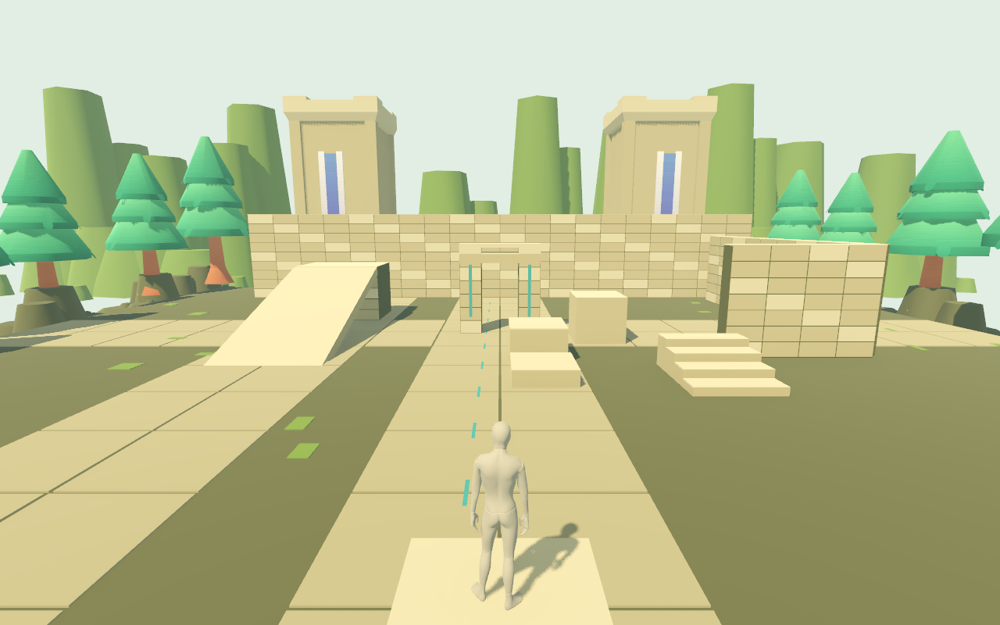
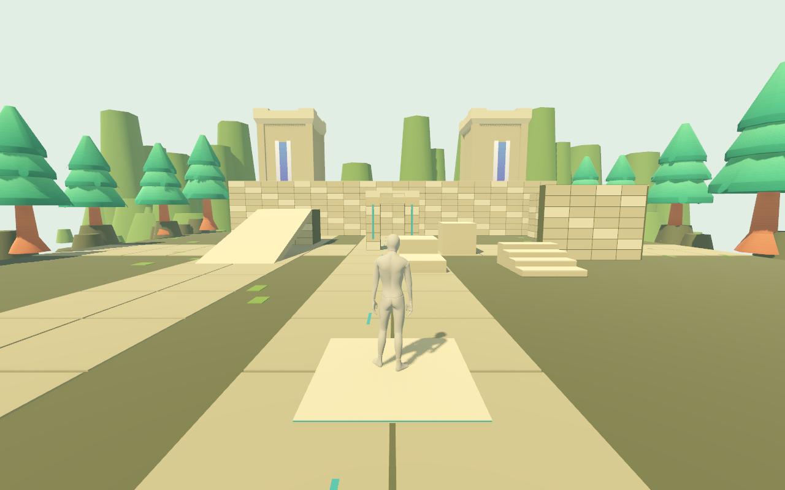
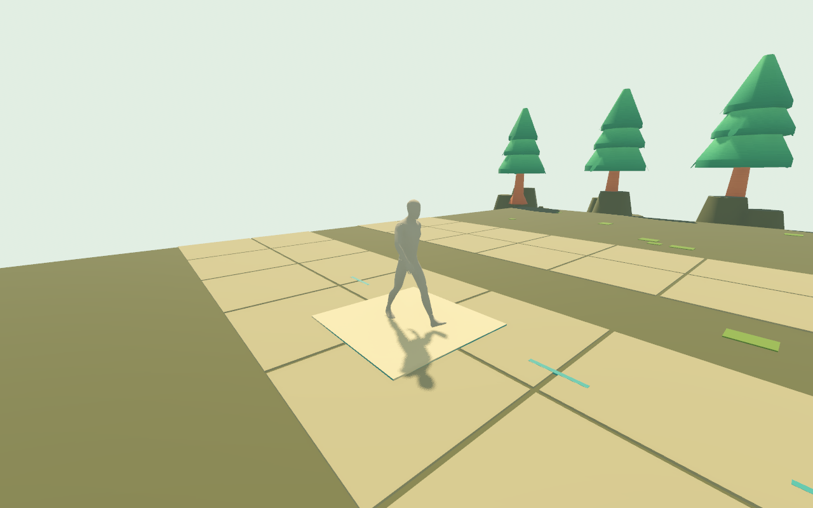
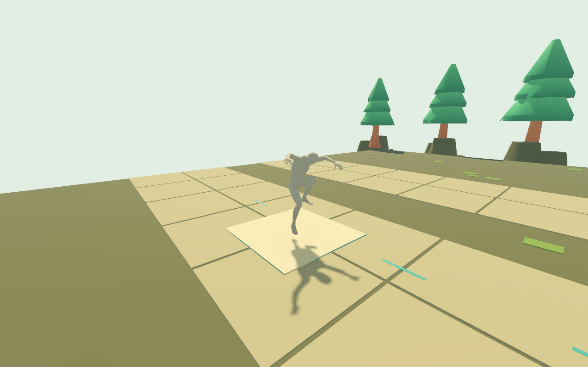

ENVIRONMENT ART / CASE STUDY 01 · 2026-11-12
同一白盒，三种美术方向
美术验收未通过 · 2026-11-12：用户指出素材优先没有落实，精细度差，几乎没有装饰性 props。本页保留技术试验及截图作为问题记录；运行和测试通过不能证明美术达标。后续应以真实建筑素材、成组道具及表面细节完成局部样板，再扩展全场。
目标是完成一次真实的检索 → 许可证核实 → 素材适配 → Godot 装配 → 试玩与固定机位巡检。参考游戏用于提炼美术语言；没有提取或复制它们的游戏资产。本页中的方向描述是本项目的设计判断。

01 · 晴日遗迹
参考《塞尔达传说：旷野之息》的自然与遗迹关系：暖色石材、清晰天空、饱和植被、远景山体。门洞是中景焦点，树丛围合背景，保留活动区的清楚轮廓。
Nintendo 官方世界介绍
02 · 灰烬庭院
参考《黑暗之魂》的衰败堡垒气氛：冷灰石材、纵向塔楼、稀疏枯木、雾化远景，用少量暖光提示门洞和落脚点。保留跳台边缘可读性。
Bandai Namco 官方介绍与影像
03 · 测试设施
参考《传送门 2》的测试空间：白色模块面板、深色结构缝、青色导向、橙色交互重点。只借鉴空间秩序与配色，不复用 Aperture 标志或游戏模型。
Valve 开发者社区的 Clean 场景参考
本轮选材判断
Kenney Castle Kit 2.0 已下载。采用其中建筑、树木和岩石 GLB：形体语言统一、体积小、内含明确的 CC0 许可证。素材和逐文件 SHA-256 清单保存在 envart/assets/kenney_castle/。原始压缩包不重复入库。
Nature Kit 和 Space Kit 作为候选进行了检索，但只有实际取得并核实的资源才记入清单。简单尺寸约束构件允许原生 Godot 网格补足；本轮先避免为简单面板建立额外 Blender 依赖。
不可改变的设计输入
| 内容 |
保护方式 |
| 门洞、坡道、台阶、跳台 |
保留原始 StaticBody3D 与 CollisionShape3D；外观从这些尺寸构建。 |
| 角色运动与眼高 |
使用现有 player profile；模型与动画仅改变外观。 |
| 巡检比较 |
三种方向使用同一条 24 秒轨迹和相同机位。 |
| 白盒回退 |
原始测试场独立保留；美术层可以切换关闭。 |
实机对比：相同白盒与机位
以下均为 Godot 4.7.2 Forward+ 的实际渲染。选择方向与机位；碰撞几何、门洞、坡道、跳台和巡检轨迹均未更换。此轮定位是低多边形的美术方向草案，尚未达到参考游戏的资产品质。
晴日遗迹 · 轨迹起点
第一次运行：先用十分钟试一圈
- 在 Godot 项目管理器导入
GodotProject/envart-pipline/project.godot，等待右下角资源导入结束。按 F5 运行整个项目，默认进入晴日遗迹。
- 点击场景捕获鼠标；WASD 移动、鼠标观察，Shift 加速、Space 跳跃，R 回出生点。用门洞、坡道和三座跳台检查尺寸感。
-
1 / 2 / 3 分别进入第一人称、第三人称、自由观察。自由观察用 E / Q 升降，滚轮调速。这些操作需要鼠标已捕获。
- 按 4 进入轨迹相机，P 播放或暂停。Home 回起点，[ / ] 前后定位一秒，L 切循环。完整轨迹 24 秒，8–10 秒停留。
- 在相机暂停时按 5 / 6 / 7 切换三种方向，按 0 显示原始白盒。切换美术不会重置玩家或轨迹进度，因此可以直接比较同一个视角。
-
Esc 释放鼠标，可点击风格按钮和轨迹时间轴；H 只隐藏左上操作提示。再次按 4 返回之前的视角。
F5 相当于运行项目指定的入口；F6 运行当前打开的场景。要单独玩旧测试场，打开 demo/controller_lab.tscn 后按 F6。不要直接运行只有美术几何的 styles/*.tscn：它们没有玩家与相机。
从 Unity 迁移：在哪里改什么
| Unity 中的习惯 |
本项目中的位置 |
| Prefab / Prefab Variant |
Godot 的 PackedScene，通常存为 .tscn。envart/envart_lab.tscn 实例化原测试场与三个美术场景。 |
| Hierarchy 里的 Gameplay 和 Art 根节点 |
BaseLab 管理物理、角色、相机；Styles 下面是 Verdant / Ashen / Facility。切换只改变外观、环境与光源。 |
| Inspector 中的配置字段 |
选中 EnvArtLab 根节点，initial_style 设置下次运行的初始方向：0 白盒，1 晴日，2 灰烬，3 设施。 |
| 材质和灯光调整 |
单独打开一个 envart/styles/*.tscn。选根节点修改 Environment、Sun Color、Sun Energy；运行主场景查看最终光照。3D 编辑器的预览环境与运行时环境可能不同。 |
| 导入模型、嵌套 Prefab |
envart/assets/kenney_castle/*.glb 是外部模型。生成器保留模型实例并启用可编辑子节点来保存材质覆盖，避免复制出冲突的节点。 |
地面、门柱、坡道等准确表面位于每个美术场景的 ProtectedSurfaces。它们来自白盒网格的尺寸和变换；表层饰面最多偏移数毫米以避免闪烁。不要仅移动这些外观来修改玩法尺寸：需要先修改白盒，再重新装配或重建对应外观。
重建边界：
envart/tools/build_studies.gd 是显式运行的离线制作脚本，不会在游戏启动时执行。它会覆盖三个生成场景；手工修改前建议另存为新场景。固定随机种子只保证布局复现，Godot 保存的资源 ID 仍可能产生文本差异。
/Applications/Godot.app/Contents/MacOS/Godot --headless \
--path GodotProject/envart-pipline \
--script res://envart/tools/build_studies.gd
人形角色：本机已接入 Mixamo

采用 Mannequin / Ch36_nonPBR，65 根骨骼。保留原始蒙皮，统一为低反光的中性色，避免服装风格抢占环境的视觉重点。它是用于比例与运动验证的人形模特，不是最终主角造型。
行走

来自 Basic Locomotion Pack。移除髋骨水平位移，保留步态起伏。
跑步
Running / Running Forward Quickly，下载时勾选 In Place；按实际速度调整播放倍率。
空中

采用 Mixamo 跳跃姿态，去掉动画的整身升降；真正的弹道由控制器计算。图中为固定采样姿态。
characters/humanoid_visual.gd 是表现层适配器，只读取速度和落地状态，使用 AnimationPlayer 做短过渡。物理胶囊仍高 1.8 米、半径 0.3 米；模型按高度归一并旋转 180°，将 Mixamo 的 +Z 朝向对齐控制器的 −Z。
步态按实际速度选择：静止待机；低于 2.6 m/s 行走；更高速度跑步。原配置的 walk_speed 为 4.5 m/s，所以普通 WASD 达到全速后看起来也在跑步，这是速度匹配的结果。若想更慢的散步，可在 controllers/default_player_profile.tres 中把 walk_speed 改为约 1.8–2.2，并重新检查关卡所需移动时间。此轮没有改动原配置。
在另一台电脑重建角色
Adobe 的 Mixamo FAQ 允许在个人和商业项目中使用角色与动作。这不等同于 CC0；本项目只提交接入代码和操作说明，不假定可以公开再分发原始素材。characters/mixamo_local/ 包含本机下载、校验清单和构建结果，已从 Git 排除。全新克隆仍可运行环境样例，但角色会退回胶囊占位。
- 登录 Mixamo，Characters 中选 Mannequin；Download → FBX Binary → T-pose，下载
Ch36_nonPBR.fbx。
- 保持同一个角色，在 Animations 搜索 Basic Locomotion Pack（7 段动作）。下载 FBX Binary、No Character、30 FPS、Keyframe Reduction: none，得到 ZIP。
- 搜索 Running，选描述 Running Forward Quickly 的短循环，勾选 In Place。下载 FBX Binary、Without Skin、30 FPS、none，得到
Running.fbx。
- 在仓库根目录运行下方命令。安装脚本只取出 idle、walking、jump，加上模型和 running；保留下载原件。Godot 会自动导入，然后生成本地
humanoid.scn。
python3 tools/install_mixamo.py \
--character ~/Downloads/Ch36_nonPBR.fbx \
--locomotion "$HOME/Downloads/Basic Locomotion Pack.zip" \
--running ~/Downloads/Running.fbx
非 macOS 或引擎位置不同时加 --godot /你的/Godot/可执行文件。如果只想先复制文件，使用 --stage-only，之后在编辑器等待导入，再运行 res://characters/build_mixamo.gd。没有下载成功、角色选错或导出格式不符时，不应把占位胶囊误认为接入成功。
验证结果与仍需人工评审的部分
| 检查 |
实际结果 |
| 角色控制器回归 |
原有 controller_smoke 通过：移动、冲刺、跳跃、门洞、墙面、坡道与视角基础。 |
| 轨迹相机回归 |
rail_camera_smoke 通过：播放、暂停、定位、循环和视角恢复。 |
| 环境渲染与通行 |
envart_visual 通过：四种显示状态的 17 个静态碰撞体尺寸及变换保持一致；所有状态均能穿过门洞；0 / 6 / 7 按键切换有效。固定机位截图经过查看，场景释放无资源残留警告。 |
| 人形与动画 |
humanoid_smoke 通过：65 根骨骼，四段动画存在，髋骨位移清除，行走确实改变骨骼姿态，跳跃与落地切换，以及第一 / 第三 / 轨迹视角下的模型显隐。 |
验证设备为 Apple M5，Godot 4.7.2，Forward+ / Metal。未完成低端硬件、其他渲染后端或最终包体性能验收。测试覆盖不等于美术质量验收，仍需要你试玩并判断空间氛围、视觉噪声和目标风格是否值得继续深化。
- 外围塔楼、树木、山形和设施只是背景，无可攀爬碰撞；可玩范围仍是原测试场。开放地面边界仍使用原有掉落复位。
- 当前自然与石材的细节密度较低，属于方向草案；没有宣称复现三款游戏的最终画面。
- 空中动作使用简化的跳跃姿态与落地过渡，没有脚部 IK、坡面贴脚或复杂落地状态。高速急转仍可能有滑步。
- 场景由大量独立可编辑节点组成，优先验证装配过程；后续可将重复饰面合批、合并网格或改成 MultiMesh。
这次跑通后得到的具体经验
-
许可和依赖必须随素材一起检查。 GLB 不保证所有图片都内嵌；Castle Kit 引用了外部色板，漏掉后场景虽然能载入，树木仍会变白。
-
先保留物理，再改变外观。 三个方向复用同一套碰撞，更容易区分美术问题与关卡问题。外观轮廓明显改变时则应单独评审碰撞，而不是默认沿用。
-
同机位比较比自由飞行更容易发现差别。 直接在暂停的轨迹上切换样式，可以比较焦点、明暗和视线，而不被机位变化干扰。
-
能播放动画不等于接入完成。 必须确认骨骼匹配、单位、朝向、髋骨位移和视角显隐；本轮角色的物理控制完全保留。
-
实例所有权需要验证退出路径。 将导入模型的子节点错误地改为外层场景所有会产生重复实例残留；改用可编辑实例保存覆盖后，渲染与释放检查通过。
这些是首个案例的记录。下一轮可以围绕你选中的方向提高资产品质、明确局部可替换的语义区域，再决定哪些步骤值得固化为通用管线。
继续阅读：Godot 轨迹相机完整图文教程 →